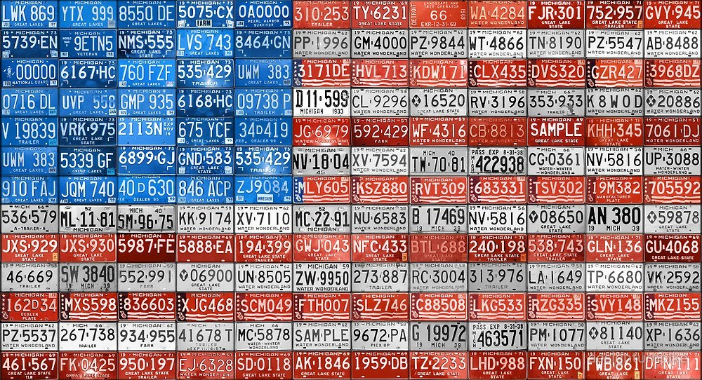
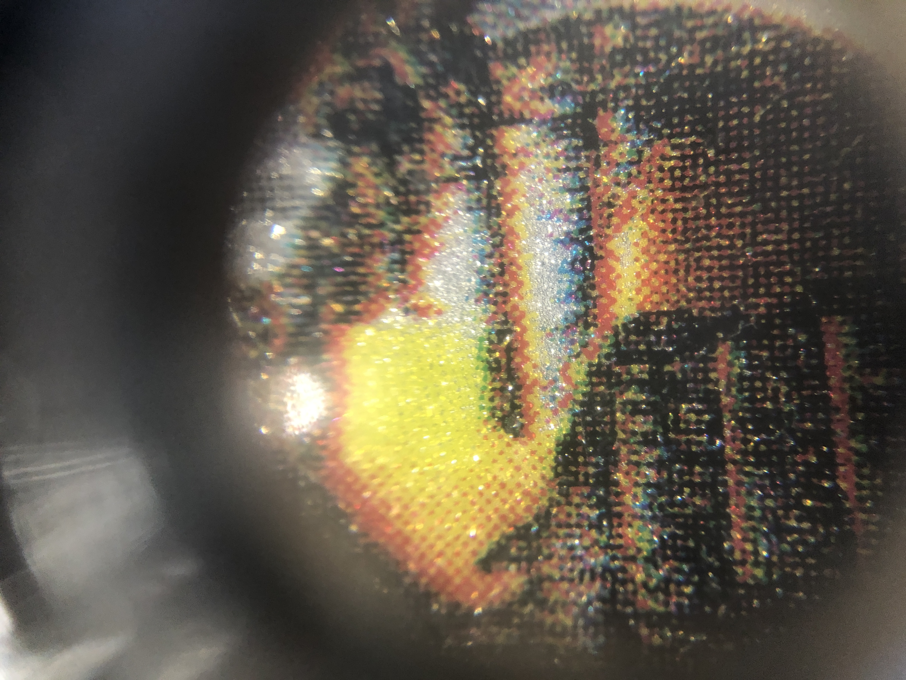
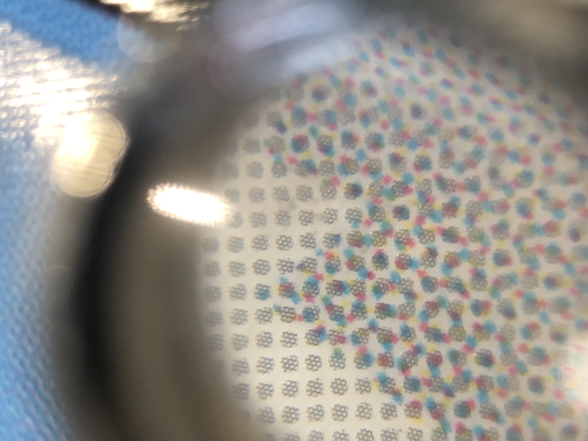
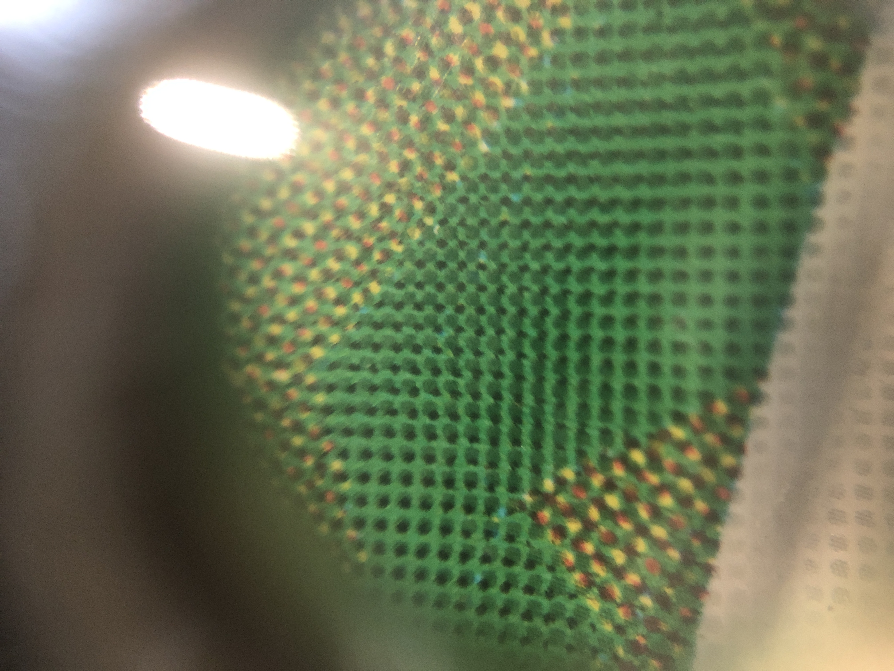
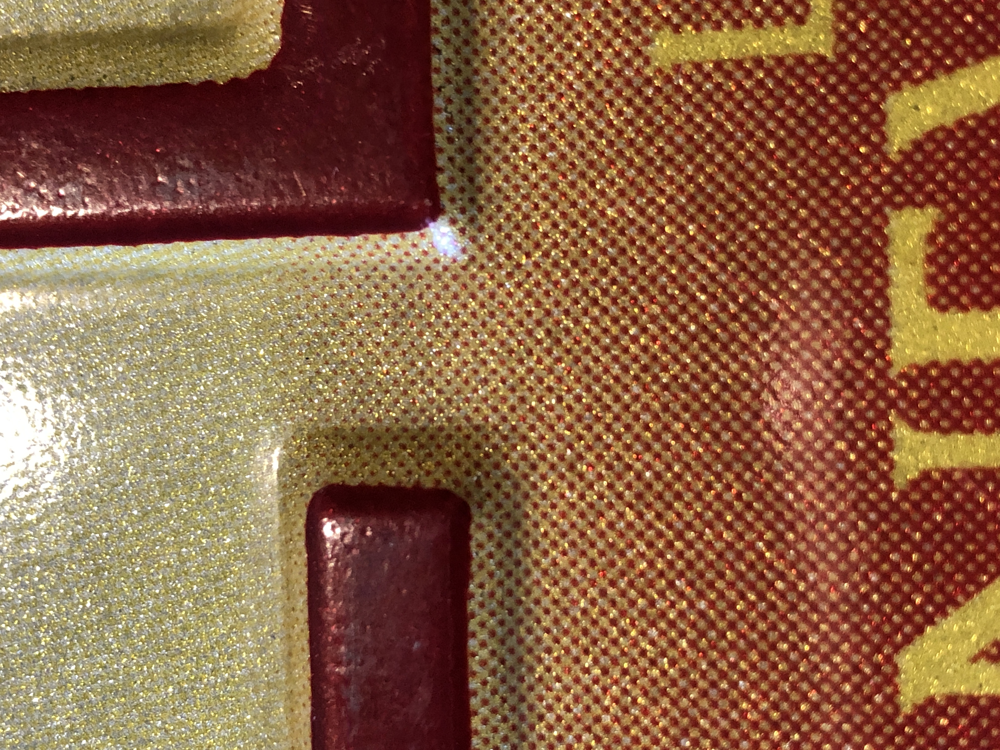
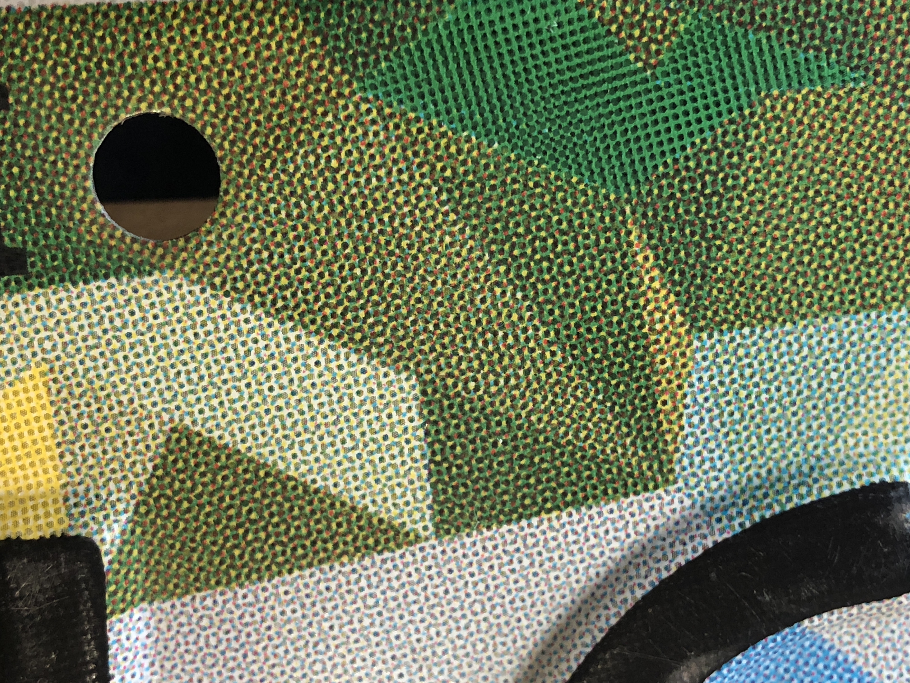
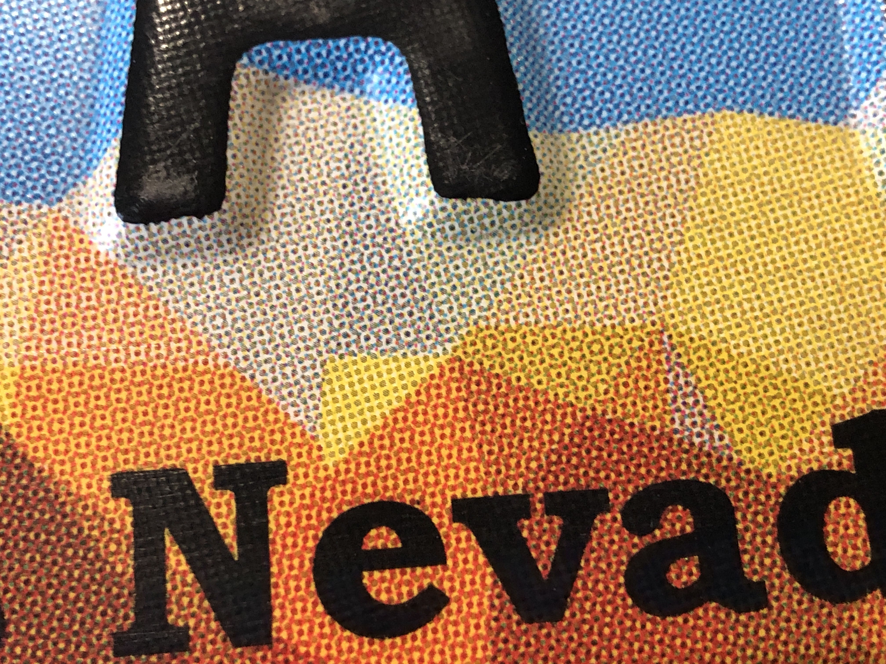
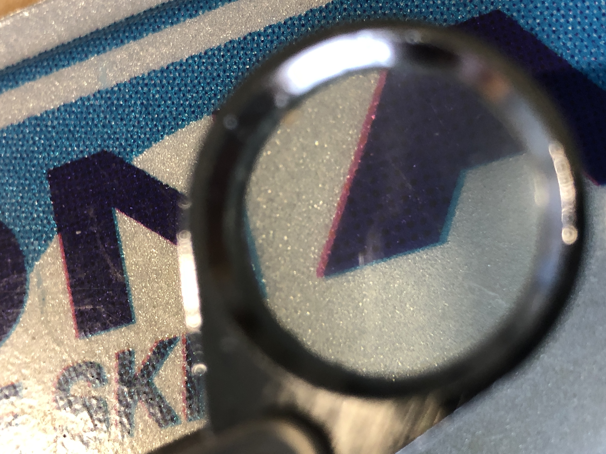
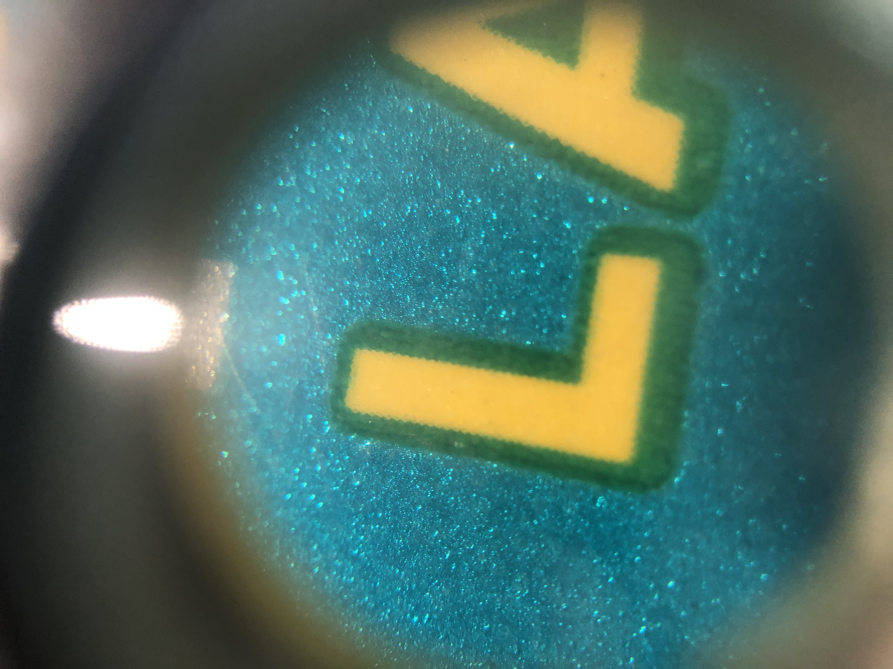
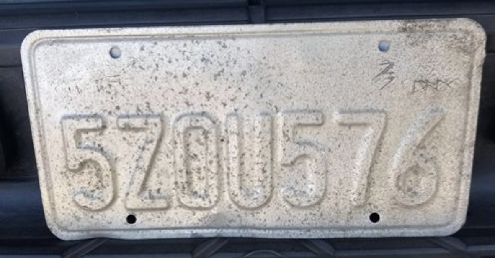

Cool Stuff
A large part of why I collect license plates is because of their unique designs. Click here to view a comprehensive infographic of how U.S. license plates designs' have changed throughout the years.
Close Ups
Process Color Printing
Upon looking closely at license plates that use many colors, these plates actually use process color printing and halftone dots to achieve a large range of colors instead of using spot colors. License plates do not have to be printed with a high resolution, so the dots and moire patterns can sometimes be seen without a loupe. I have included photos of the most interesting close ups from my personal license plate collection.
     Misregistration and Trapping
While license plates have evolved to be a way to personalize and decorate your car, their main purpose is to be functional. Thus, not a lot of percision is needed for when printing the various characters and designs found on plates. Below are two photos. The first demonstates a pretty large misregistation. The second demonstates a very large trapping that is effective.
 Acid Plate
This photo is from Evan, a member of the License Plate Collectors Facebook group. All the paint has been completely stripped from this piece of metal. Evan said this plate looks like it received an acid bath. You can still tell it is a California plate by the character sequence.
The comments under this photo were what I found most interesting. One member, Tyler, said, "Where I grew up in the high desert in California, front plates would get sandblasted and your windshield was always pitted." License plates were not made to handle extreme weather conditions which is a consideration we must account for in the future, especially with global climate change.
Another member commented, "This is the reason all states should emboss their plates!" This brings up a question to what happens if flat plates have their vinyl scrapped off. With embossed plates, chunks of metal would have to be shaved off in order for the characters to not be readable. For flat plates, they are more vunerable to becoming unreadable.
Lastly, David commented that "This is a passenger plate, and I see lots of buses with plates almost in this condition. I think the cleaners they use on the back of diesel buses erode the plates more quickly than normal car wash materials." This brings up a good point about how license plates need to be able to withstand not just the elements, but any cleaners used on cars and commercial vehicles.